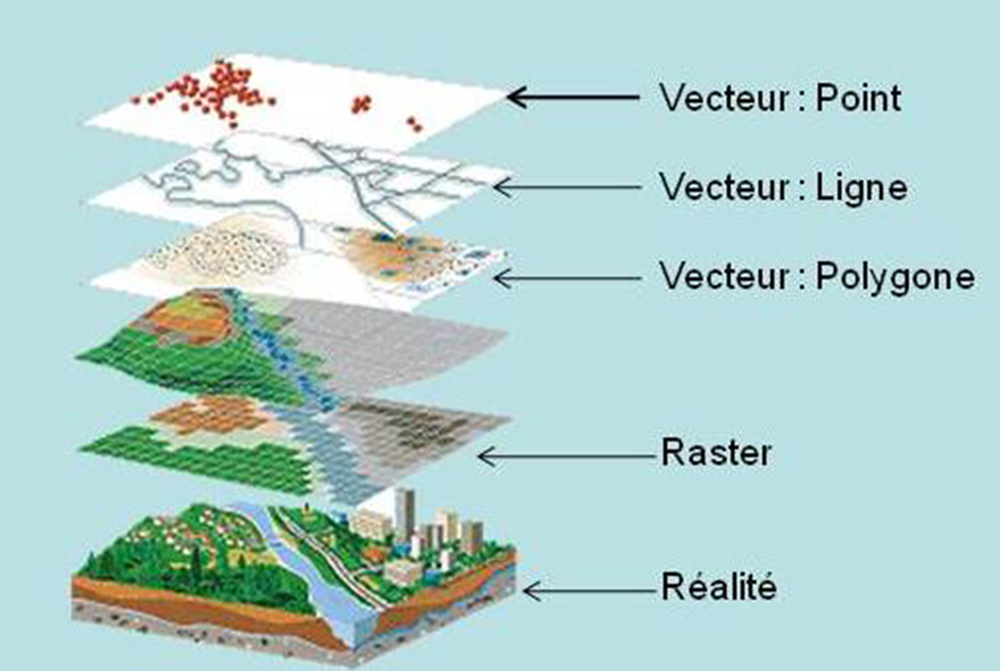

L’interopérabilité en géomatique
Objectifs
- Comprendre l’importance de l’interopérabilité
- Intégrer cette notion dans la conduite d’un projet SIG
- Connaître les principaux webservices
- Identifier les standards, normes et organisations clés
1. Définition de l’interopérabilité
Interopérabilité
Capacité de différents systèmes, logiciels ou organisations à échanger, comprendre et réutiliser des données sans perte d’information ni transformation complexe.
Compatibilité vs Interopérabilité
| Concept | Description |
|---|---|
| Compatibilité | Notion verticale : un outil fonctionne dans un environnement spécifique (format propriétaire, écosystème fermé). |
| Interopérabilité | Notion transversale : les données circulent entre outils hétérogènes sans friction. |
Langage pivot
Format ou langage universel permettant de réduire les efforts de traduction entre systèmes.
Exemples :
- DWG/DXF (AutoCAD) : peu interopérables
- GML : format pivot normalisé
2. Contexte : pourquoi l’interopérabilité est essentielle ?
- Multiplication des outils SIG (QGIS, ArcGIS, PostGIS, FME…)
- Collaboration entre acteurs publics, privés et citoyens
- Explosion des données géographiques (3D, IoT, capteurs, imagerie)
- Transition vers des plateformes web et cloud
- Pérennisation des données
- Réduction des coûts d’intégration et de maintenance
3. Standards OGC
OGC – Open Geospatial Consortium
Organisation internationale développant des standards ouverts pour l’interopérabilité géospatiale.
https://www.ogc.org/standards/
Exemples de standards OGC
- WMS – Web Map Service
- WMTS – Web Map Tile Service
- WFS – Web Feature Service
- WCS – Web Coverage Service
- CS-W – Catalogue Service for the Web
- WPS – Web Processing Service
- GML – Geography Markup Language
- SLD – Styled Layer Descriptor
4. Normes ISO
ISO / TC 211
Comité technique dédié à la normalisation des informations géographiques.
Processus d’élaboration d’une norme
- Proposition
- Préparation
- Comité
- Enquête
- Approbation
Normes importantes
- ISO 19115 : métadonnées
- ISO 19139 : implémentation XML des métadonnées
- ISO 19111 : systèmes de référence spatiale
5. Directive INSPIRE
https://www.ecologie.gouv.fr/politiques-publiques/directive-europeenne-inspire
Objectif : rendre les données environnementales accessibles, interopérables et réutilisables dans toute l’Europe.
Principes FAIR
- Findable — Facile à trouver
- Accessible — Facile à accéder
- Interoperable — Interopérable
- Reusable — Réutilisable
6. Enjeux de l’interopérabilité
Sémantique
Définition standardisée des concepts, structures et sens des données.
- QGIS : couche
- PostGIS : table
- ArcGIS Pro : classe d’entité
Géographique
Basée sur des systèmes géodésiques uniformes.
- France : RGF93
- Projection courante : EPSG:2154 (Lambert 93)
Directives et recommandations
Les initiatives européennes (ex : INSPIRE) encouragent l’interopérabilité et facilitent l’échange et la réutilisation des données.
Partenariats et collaborations
Les collectivités et acteurs privés travaillent ensemble pour garantir l’interopérabilité.
Exemple : Métropole Rouen Normandie.
Techniques
Formats, API, protocoles, services web.
Organisationnelles
Mutualisation, gouvernance, diffusion, documentation.
7. BIM, CIM, TIM
https://www.urbanisme-puca.gouv.fr/bim-cim-tim-r193.html
- BIM : Building Information Modeling
- CIM : City Information Modeling
- TIM : Territory Information Modeling
Objectif : optimiser la conception, la gestion et la réhabilitation des bâtiments, infrastructures et territoires.
Tendances
- Représentation 3D massive
- Convergence SIG + BIM + moteurs 3D
- Exemples :
- Exploration immersive de bâtiments
- Intégration BIM + SIG (ex : ESRI + partenaires privés)
8. Formats et webservices
Webservices (distant)
| Service | Rôle | Utilisations courantes |
|---|---|---|
| WMS | Affichage d’images cartographiques (rendu serveur) | Visualisation rapide, fonds de plan, intégration SIG |
| WMTS | Tuiles pré-générées | Web/mobile, forte charge, fonds de plan |
| WFS | Accès aux données vecteur | Analyse, édition distante, interrogation attributaire |
| WCS | Accès aux données raster brutes | MNT, imagerie, analyses scientifiques |
| CS-W | Catalogue de métadonnées | Recherche, moissonnage, portails INSPIRE |
| WPS | Traitements à distance | Calculs lourds, automatisation, workflows web |
Formats (local)
GML (Geography Markup Language)
- Format XML normalisé OGC
- Très structuré, riche sémantiquement
- Utilisé pour INSPIRE, cadastre, modèles complexes
KML (Keyhole Markup Language)
- Format Google Earth
- Visualisation 3D simple, annotations
GPKG (GeoPackage)
- Format SQLite normalisé OGC
- Vecteur + raster + styles
- Format d’échange moderne et portable
SLD (Styled Layer Descriptor)
- Style XML pour WMS/WFS
- Standard OGC
WKT-CRS (Well-Known Text)
- Définition textuelle d’un système de coordonnées
- Utilisé dans QGIS, PostGIS, PROJ
Formats cloud
- COG – Cloud Optimized GeoTIFF
Un GeoTIFF optimisé devient un flux accessible via HTTP.
9. Webservices : exemples concrets
WMTS : renvoie une tuile
https://data.geopf.fr/wmts? SERVICE=WMTS& REQUEST=GetTile& VERSION=1.0.0& LAYER=HR.ORTHOIMAGERY.ORTHOPHOTOS& STYLE=normal& FORMAT=image/jpeg& TILEMATRIXSET=PM_6_19& TILEMATRIX=8& TILEROW=89& TILECOL=130
WMS : renvoie une image
https://data.geopf.fr/wms-r/wms? SERVICE=WMS& VERSION=1.3.0& REQUEST=GetMap& BBOX=48.13,1.67,49.17,3.27& CRS=EPSG:4326& WIDTH=1403& HEIGHT=907& LAYERS=HR.ORTHOIMAGERY.ORTHOPHOTOS& FORMAT=image/jpeg
WFS : renvoie des entités vecteur
https://data.geopf.fr/wfs/wfs? SERVICE=WFS& REQUEST=GetFeature& VERSION=2.0.0& TYPENAMES=ADMINEXPRESS-COG.2024:epci& COUNT=5000& SRSNAME=EPSG:3857
TMS : grille XYZ
https://tile.openstreetmap.org/11/1026/749.png (tile.openstreetmap.org in Bing)
10. Comparaison synthétique
| Critère | WMS | WMTS | TMS |
|---|---|---|---|
| Type | Image générée à la demande | Tuiles pré-générées | Tuiles XYZ |
| Performance | Moyenne | Très élevée | Très élevée |
| Usage | SIG, cartes dynamiques | Web, mobile | Web (Leaflet, Mapbox) |
| Mise à jour | Immédiate | Régénération nécessaire | Dépend du serveur |
| Avantage | Flexible | Rapide, scalable | Simple |
| Inconvénient | Lent | Peu flexible | Non OGC |
11. Résumé visuel
- WMS → le serveur dessine une image à chaque requête
- WMTS → le serveur sert une tuile déjà calculée
- TMS → le client charge une tuile selon une grille XYZ
GetCapabilities = expression de l’interopérabilité
→ description standardisée des capacités d’un service
12. Catalogue et métadonnées
Axes de qualité
- Données exhaustives, propres, géométriquement correctes
- Données documentées (ISO 19115 / 19139, INSPIRE, DCAT)
- Données diffusables (CSW, catalogues)
- Données réutilisables (accessibles, ouvertes)
13. ETL (Extract, Transform, Load)
Outils permettant d’automatiser les traitements :
- Extraction
- Transformation
- Chargement
Aussi appelé Spatial ETL ou GTL.
14. Les formats de données

En géomatique, les données spatiales sont généralement représentées sous deux grandes formes : les données vecteur et les données raster.
Ces deux modèles répondent à des usages différents et sont complémentaires dans un SIG.
1. Les données vecteur
Les données vecteur représentent l’espace à l’aide de géométries précises : points, lignes et polygones.
Elles sont idéales pour les objets discrets, bien délimités.
Un vecteur est composé d'une géométrie et d'uen table attributaire
1.1 Types de géométries
| Type | Description | Exemples |
|---|---|---|
| Point | Une position unique dans l’espace | arbres, bornes, adresses |
| Ligne | Suite de points connectés | routes, réseaux, rivières |
| Polygone | Surface fermée | parcelles, bâtiments, zones administratives |
1.2 Exemples d’usage des données vecteur
- Cartographie du cadastre : parcelles, bâtiments, limites foncières
- Réseaux : eau, électricité, fibre, routes, transports
- Analyse spatiale : calculs de distances, intersections, buffers
- Urbanisme : zonages, PLU, périmètres réglementaires
- Gestion d’infrastructures : inventaires, inspections, patrimoine
1.3 Formats vecteur courants
| Format | Description | Usage |
|---|---|---|
| Shapefile (.shp) | Format historique ESRI, composé de plusieurs fichiers | Très répandu mais limité (255 champs, pas d’UTF-8) |
| GeoPackage (.gpkg) | Format SQLite moderne, standard OGC | Stockage complet (vecteur + raster), très interopérable |
| GeoJSON (.geojson) | Format texte basé sur JSON | Web, API, échanges légers |
| GML (.gml) | Format XML riche et structuré | INSPIRE, données officielles, échanges institutionnels |
| KML (.kml) | Format Google Earth | Visualisation 3D simple, annotations |
| PostGIS (base PostgreSQL) | Extension spatiale de PostgreSQL | Stockage SIG professionnel, analyses spatiales avancées |
| GPX (.gpx) | Format XML pour traces GPS | Randonnée, cyclisme, navigation, import/export GPS |
| File Geodatabase (.gdb) | Format propriétaire ESRI | Stockage volumineux, topologie, géotraitements ArcGIS |
| MapInfo TAB (.tab) | Format MapInfo | Collectivités, bureaux d’études, SIG historiques |
| MAT (.mat) | Format MATLAB | Données scientifiques, matrices, traitement numérique |
| DAT (.dat) | Format générique (texte ou binaire) | Données brutes, exports logiciels, formats propriétaires |
| GCT / GeoConcept (.gct) | Format GeoConcept | SIG métier (transport, logistique, réseaux) |
2. Les données raster
Les données raster représentent l’espace sous forme de grille de pixels.
Chaque pixel possède une valeur (couleur, altitude, température…).
Elles sont idéales pour les phénomènes continus ou les images.
2.1 Types de raster
| Type | Description | Exemples |
|---|---|---|
| Imagerie | Photos aériennes, satellites | orthophotos, Sentinel, drone |
| Modèles numériques | Valeurs continues | MNT, MNS, modèles hydrologiques |
| Cartes thématiques | Valeurs catégorielles | occupation du sol, risques |
| Raster dérivés | Calculs issus d’analyses | pentes, orientations, indices NDVI |
2.2 Exemples d’usage des données raster
- Analyse environnementale : NDVI, humidité, température
- Modélisation 3D : MNT/MNS, ombrages, profils altimétriques
- Cartographie d’occupation du sol : Corine Land Cover, OSO
- Suivi temporel : évolution des cultures, déforestation
- Hydrologie : bassins versants, écoulements, zones inondables
- Imagerie : orthophotos, vues satellites, thermographie
2.3 Formats raster courants
| Format | Description | Usage |
|---|---|---|
| GeoTIFF (.tif) | Format raster géoréférencé | Standard SIG, très polyvalent |
| COG (Cloud Optimized GeoTIFF) | Version optimisée pour le cloud | Lecture en streaming HTTP |
| JPEG2000 (.jp2) | Compression avancée | Imagerie aérienne, archives |
| IMG (.img) | Format ERDAS | Données volumineuses |
| ASCII Grid (.asc) | Format texte simple | MNT, échanges scientifiques |
3. Comparaison vecteur / raster
| Critère | Vecteur | Raster |
|---|---|---|
| Représentation | Objets discrets | Phénomènes continus |
| Précision | Très élevée | Dépend de la résolution |
| Taille des fichiers | Souvent légère | Peut être très lourde |
| Analyses | Topologie, réseaux | Calculs spatiaux, surfaces |
| Exemples | Routes, bâtiments | Orthophotos, MNT |
4. Complémentarité des deux modèles
Dans un SIG, vecteur et raster sont complémentaires :
- Un MNT raster peut servir à calculer des courbes de niveau vecteur
- Une orthophoto raster sert de fond de plan pour des numérisations vecteur
- Un zonage vecteur peut être appliqué à un raster pour extraire des valeurs
5. Résumé
- Vecteur : objets précis, géométries, analyses topologiques
- Raster : images, surfaces continues, analyses environnementales
- Les deux sont indispensables dans un SIG moderne